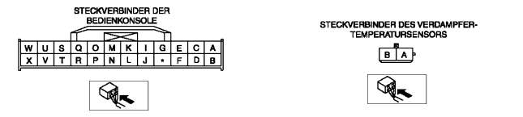

DTC B1251, B1253, B1274, B1275, B1282, B1283, B1947, B2014 (MEHRERE DTCS WERDEN ANGEZEIGT)
B3E070201038W03
DTC B1251, B1253, B1947, B2014, B1282, B1283, B1274, B1275
Bedienkonsolensystem (+5 V Betriebsspannung oder Sensormasse)
MÖGLICHE URSACHE
• Unterbrechung im Kabelbaum zwischen Bedienkonsole und jedem Temperatursensor, Mischklappen-Stellmotor oder Luftverteilungs-Stellmotor
Diagnosetestfunktionen
SCHRITT
ÜBERPRÜFUNG
MASSNAHME
1
• Den Steckverbinder der Bedienkonsole und den Steckverbinder des Verdampfer-Temperatursensors abklemmen.
• Gibt es eine Unterbrechung im Kabelbaum zwischen Klemme U der Bedienkonsole und Klemme A des Verdampfer-Temperatursensors?
Ja
Kabelbaum reparieren.
Nein
Das System funktioniert zur Zeit normal. (Die frühere Störung aus dem Speicher löschen.)
